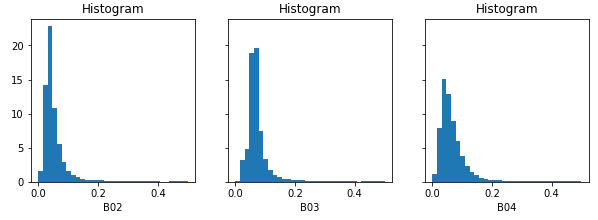

User-Defined Functions (UDF) explained¶
While openEO supports a wide range of pre-defined processes and allows to build more complex user-defined processes from them, you sometimes need operations or algorithms that are not (yet) available or standardized as openEO process. User-Defined Functions (UDF) is an openEO feature (through the run_udf process) that aims to fill that gap by allowing a user to express (a part of) an algorithm as a Python/R/… script to be run back-end side.
Ideally, it allows you to embed existing Python/R/… implementations in an openEO workflow (with some necessary “glue code”). However, it is recommended to try to do as much pre- or postprocessing with pre-defined processes before blindly copy-pasting source code snippets as UDFs. Pre-defined processes are typically well-optimized by the backend, while UDFs can come with a performance penalty and higher development/debug/maintenance costs.
Warning
Don not confuse user-defined functions (abbreviated as UDF) with user-defined processes (sometimes abbreviated as UDP) in openEO, which is a way to define and use your own process graphs as reusable building blocks. See User-Defined Processes for more information.
Applicability and Constraints¶
openEO is designed to work transparently on large data sets and your UDF has to follow a couple of guidelines to make that possible. First of all, as data cubes play a central role in openEO, your UDF should accept and return correct data cube structures, with proper dimensions, dimension labels, etc. Moreover, the back-end will typically divide your input data cube in smaller chunks and process these chunks separately (e.g. on isolated workers). Consequently, it’s important that your UDF algorithm operates correctly in such a chunked processing context.
UDFs as apply/reduce “callbacks”¶
UDFs are typically used as “callback” processes for “meta” processes
like apply or reduce_dimension (also see Processes with child “callbacks”).
These meta-processes make abstraction of a datacube as a whole
and allow the callback to focus on a small slice of data or a single dimension.
Their nature instructs the backend how the data should be processed
and can be chunked:
- apply
Applies a process on each pixel separately. The back-end has all freedom to choose chunking (e.g. chunk spatially and temporally). Dimensions and their labels are fully preserved. See A first example: apply with an UDF to rescale pixel values
- apply_dimension
Applies a process to all pixels along a given dimension to produce a new series of values for that dimension. The back-end will not split your data on that dimension. For example, when working along the time dimension, your UDF is guaranteed to receive a full timeseries, but the data could be chunked spatially. All dimensions and labels are preserved, except for the dimension along which
apply_dimensionis applied: the number of dimension labels is allowed to change.- reduce_dimension
Applies a process to all pixels along a given dimension to produce a single value, eliminating that dimension. Like with
apply_dimension, the back-end will not split your data on that dimension. The dimension along whichapply_dimensionis applied must be removed from the output. For example, when applyingreduce_dimensionon a spatiotemporal cube along the time dimension, the UDF is guaranteed to receive full timeseries (but the data could be chunked spatially) and the output cube should only be a spatial cube, without a temporal dimension- apply_neighborhood
Applies a process to a neighborhood of pixels in a sliding-window fashion with (optional) overlap. Data chunking in this case is explicitly controlled by the user. Dimensions and number of labels are fully preserved.
UDF function names and signatures¶
The UDF code you pass to the back-end is basically a Python script
that contains one or more functions.
Exactly one of these functions should have a proper UDF signature,
as defined in the openeo.udf.udf_signatures module,
so that the back-end knows what the entrypoint function is
of your UDF implementation.
Module openeo.udf.udf_signatures¶
This module defines a number of function signatures that can be implemented by UDF’s. Both the name of the function and the argument types are/can be used by the backend to validate if the provided UDF is compatible with the calling context of the process graph in which it is used.
- openeo.udf.udf_signatures.apply_datacube(cube, context)[source]¶
Map a
XarrayDataCubeto anotherXarrayDataCube.Depending on the context in which this function is used, the
XarrayDataCubedimensions have to be retained or can be chained. For instance, in the context of a reducing operation along a dimension, that dimension will have to be reduced to a single value. In the context of a 1 to 1 mapping operation, all dimensions have to be retained.- Parameters:
cube (
XarrayDataCube) – input data cubecontext (
dict) – A dictionary containing user context.
- Return type:
- Returns:
output data cube
- openeo.udf.udf_signatures.apply_timeseries(series, context)[source]¶
Process a timeseries of values, without changing the time instants.
This can for instance be used for smoothing or gap-filling.
- Parameters:
series (
Series) – A Pandas Series object with a date-time index.context (
dict) – A dictionary containing user context.
- Return type:
Series- Returns:
A Pandas Series object with the same datetime index.
A first example: apply with an UDF to rescale pixel values¶
In most of the examples here, we will start from an initial Sentinel2 data cube like this:
s2_cube = connection.load_collection(
"SENTINEL2_L2A",
spatial_extent={"west": 4.00, "south": 51.04, "east": 4.10, "north": 51.1},
temporal_extent=["2022-03-01", "2022-03-31"],
bands=["B02", "B03", "B04"]
)
The raw values in this initial s2_cube data cube are digital numbers
(integer values ranging from 0 to several thousands)
and to get physical reflectance values (float values, typically in the range between 0 and 0.5),
we have to rescale them.
This is a simple local transformation, without any interaction between pixels,
which is the modus operandi of the apply processes.
Note
In practice it will be a lot easier and more efficient to do this kind of rescaling
with pre-defined openEO math processes, for example: s2_cube.apply(lambda x: 0.0001 * x).
This is just a very simple illustration to get started with UDFs.
UDF script¶
The UDF code is this short script (the part that does the actual value rescaling is highlighted):
udf-code.py¶1from openeo.udf import XarrayDataCube
2
3def apply_datacube(cube: XarrayDataCube, context: dict) -> XarrayDataCube:
4 array = cube.get_array()
5 array.values = 0.0001 * array.values
6 return cube
Some details about this UDF script:
line 1: We import
XarrayDataCubeto use as type annotation of the UDF function.line 3: We define a function named
apply_datacube, which receives and returns aXarrayDataCubeinstance. We follow here theapply_datacube()UDF function signature.line 4:
cube(aXarrayDataCubeobject) is a thin wrapper around the data of the chunk we are currently processing. We useget_array()to get this data, which is anxarray.DataArrayobject.line 5: Because our scaling operation is so simple, we can transform the
xarray.DataArrayvalues in-place.line 6: Consequently, because the values were updated in-place, we don’t have to build a new
XarrayDataCubeobject and can just return the (in-place updated)cubeobject again.
Workflow script¶
In this first example, we’ll cite a full, standalone openEO workflow script, including creating the back-end connection, loading the initial data cube and downloading the result. The UDF-specific part is highlighted:
1import openeo
2
3# Create connection to openEO back-end
4connection = openeo.connect("...").authenticate_oidc()
5
6# Load initial data cube.
7s2_cube = connection.load_collection(
8 "SENTINEL2_L2A",
9 spatial_extent={"west": 4.00, "south": 51.04, "east": 4.10, "north": 51.1},
10 temporal_extent=["2022-03-01", "2022-03-31"],
11 bands=["B02", "B03", "B04"]
12)
13
14# UDF code (as inline string)
15udf_code = """
16from openeo.udf import XarrayDataCube
17
18def apply_datacube(cube: XarrayDataCube, context: dict) -> XarrayDataCube:
19 array = cube.get_array()
20 array.values = 0.0001 * array.values
21 return cube
22"""
23
24# Create UDF helper object encapsulating the UDF code.
25udf = openeo.UDF(code=udf_code, runtime="Python", data={"from_parameter": "x"})
26
27# Pass UDF object as child process to `apply`.
28rescaled = s2_cube.apply(process=udf)
29
30rescaled.download("apply-udf-scaling.nc")
Discussion:
Line 15: We define the UDF code as an inline string.
Line 25:
openeo.UDFis a helper class to build arun_udfnode, to be used as child process in theapplyprocess.Line 28: we pass this UDF object as the
processargument toDataCube.apply()
Tip
Instead of putting your UDF code in an inline string like in the example,
it’s usually recommended to load the UDF code from a separate file,
which is easier to maintain in your preferred editor or IDE.
For example, using the handy pathlib module from Python’s standard library:
from pathlib import Path
udf_code = Path("udf-code.py").read_text(encoding="utf8")
After downloading the result, we can inspect the band values locally. Note see that they fall mainly in a range from 0 to 1 (in most cases even below 0.2), instead of the original digital number range (thousands):
Illustration of data chunking in apply with a UDF¶
TODO
Example: apply_dimension with a UDF¶
TODO
Example: reduce_dimension with a UDF¶
TODO
Example: apply_neighborhood with a UDF¶
TODO
Example: Smoothing timeseries with a user defined function (UDF)¶
In this example, we start from the evi_cube that was created in the previous example, and want to
apply a temporal smoothing on it. More specifically, we want to use the “Savitzky Golay” smoother
that is available in the SciPy Python library.
To ensure that openEO understand your function, it needs to follow some rules, the UDF specification. This is an example that follows those rules:
smooth_savitzky_golay.py¶import xarray
from scipy.signal import savgol_filter
from openeo.udf import XarrayDataCube
def apply_datacube(cube: XarrayDataCube, context: dict) -> XarrayDataCube:
"""
Apply Savitzky-Golay smoothing to a timeseries datacube.
This UDF preserves dimensionality, and assumes an input
datacube with a temporal dimension 't' as input.
"""
array: xarray.DataArray = cube.get_array()
filled = array.interpolate_na(dim='t')
smoothed_array = savgol_filter(filled.values, 5, 2, axis=0)
return XarrayDataCube(
array=xarray.DataArray(smoothed_array, dims=array.dims, coords=array.coords)
)
The method signature of the UDF is very important, because the back-end will use it to detect
the type of UDF.
This particular example accepts a DataCube object as input and also returns a DataCube object.
The type annotations and method name are actually used to detect how to invoke the UDF, so make sure they remain unchanged.
Once the UDF is defined in a separate file, we need to load it:
from pathlib import Path
smoothing_udf = Path('smooth_savitzky_golay.py').read_text()
print(smoothing_udf)
after that, we can simply apply it along a dimension:
smoothed_evi = evi_cube_masked.apply_dimension(
code=smoothing_udf, runtime='Python', dimension="t",
)
Downloading a datacube and executing an UDF locally¶
Sometimes it is advantageous to run a UDF on the client machine (for example when developing/testing that UDF).
This is possible by using the convenience function openeo.udf.run_code.execute_local_udf().
The steps to run a UDF (like the code from smooth_savitzky_golay.py above) are as follows:
Run the processes (or process graph) preceding the UDF and download the result in ‘NetCDF’ or ‘JSON’ format.
Run
openeo.udf.run_code.execute_local_udf()on the data file.
For example:
from pathlib import Path
from openeo.udf import execute_local_udf
my_process = connection.load_collection(...
my_process.download('test_input.nc', format='NetCDF')
smoothing_udf = Path('smooth_savitzky_golay.py').read_text()
execute_local_udf(smoothing_udf, 'test_input.nc', fmt='netcdf')
Note: this algorithm’s primary purpose is to aid client side development of UDFs using small datasets. It is not designed for large jobs.
Profile a process server-side¶
Warning
Experimental feature - This feature only works on back-ends running the Geotrellis implementation, and has not yet been adopted in the openEO API.
Sometimes users want to ‘profile’ their UDF on the back-end. While it’s recommended to first profile it offline, in the same manner as you can debug UDF’s, back-ends may support profiling directly. Note that this will only generate statistics over the python part of the execution, therefore it is only suitable for profiling UDFs.
Usage¶
Only batch jobs are supported! In order to turn on profiling, set ‘profile’ to ‘true’ in job options:
job_options={'profile':'true'}
... # prepare the process
process.execute_batch('result.tif',job_options=job_options)
When the process has finished, it will also download a file called ‘profile_dumps.tar.gz’:
rdd_-1.pstatsis the profile data of the python driver,the rest are the profiling results of the individual rdd id-s (that can be correlated with the execution using the SPARK UI).
Viewing profiling information¶
The simplest way is to visualize the results with a graphical visualization tool called kcachegrind. In order to do that, install kcachegrind packages (most linux distributions have it installed by default) and it’s python connector pyprof2calltree. From command line run:
pyprof2calltree rdd_<INTERESTING_RDD_ID>.pstats.
Another way is to use the builtin pstats functionality from within python:
import pstats
p = pstats.Stats('restats')
p.print_stats()
Example¶
An example code can be found here .